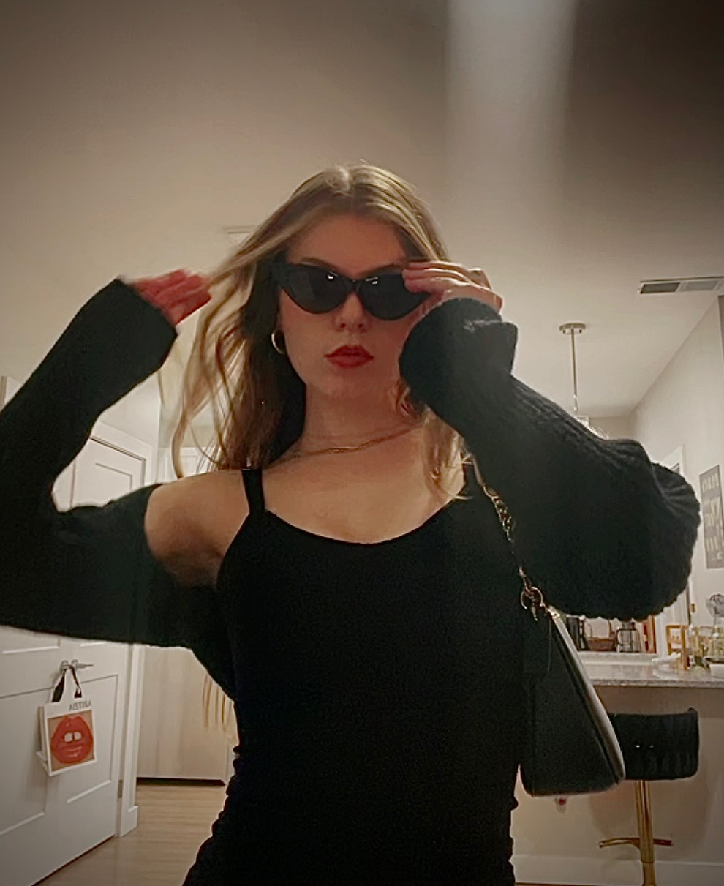

Artist Statement

Zoe Lane is a studio artist whose work is rooted in emotion, vulnerability, and the unspoken experiences that shape human connection. She earned her Bachelor of Arts in Studio Art with a concentration in sculpture, along with minors in photography and business, from the University of Saint Francis. As a creative shaped by deep feeling and inner complexity, she was drawn to art through its ability to express what words often cannot.
At the center of Zoe Lane's practice is the desire to make people feel. Her work explores the emotional weight of mental health and the layered experience of being a woman in a world that so often asks women to be soft and strong, visible and silent, delicate and unbreakable all at once. She is drawn to the tension within those contradictions and uses art as a way to give them form.
Through found objects and fabric, she creates wearable sculptures that carry both intimacy and burden. These forms speak to femininity not as performance, but as lived experience. They embody tenderness, pain, endurance, beauty, and pressure. They hold the physical and emotional realities that women are often expected to carry quietly.
Her photography extends that language by capturing moments that feel deeply personal, fragile, and honest. Through a feminine lens, she documents emotional states that are often hidden beneath the surface, revealing the quiet struggle, sensitivity, and strength that can exist within a single moment. Rather than offering polished distance, her work invites closeness. It asks the viewer not only to look, but to feel.
Zoe Lane's goal is to create work that reaches people at an emotional level strong enough to leave something behind. She wants her viewers to feel understood in their pain, seen in their softness, challenged in their assumptions, and reminded of the strength that can exist within vulnerability. Her work is an invitation into honesty, into empathy, and into the kind of connection that can only happen when something true is finally given shape.